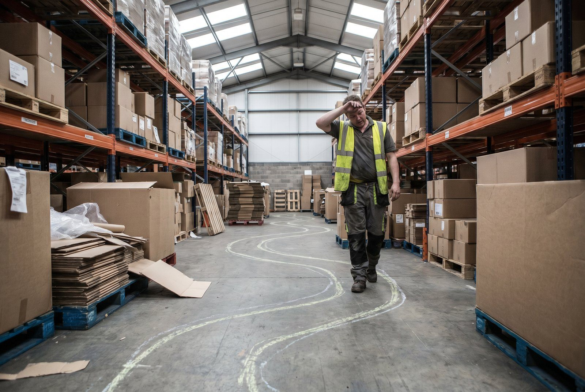

Plukkeren går forbi hylde C. Plukker fra A. Går tilbage til C.
Systemet lister varer i ordrelinje-rækkefølge , ikke fysisk placering.
Gangtid udgør 50,60% af plukketiden. Halvdelen er spild.
Det er ikke medarbejderens fejl. Det er systemets.
Ved 200 ordrer/dag og ineffektive plukruter mister du 2,3 timer dagligt i unødvendig gang. Det er 160.000,240.000 kr./år i tabt kapacitet.
Hvad er en plukrute?
👉 Har du samme problem? Se hvordan SmartPack løser det
En plukrute er den vej en medarbejder følger i lageret for at samle alle varer til en ordre eller en batch. Den kan være:
- Tilfældig: Medarbejderen bestemmer selv rækkefølgen
- Ordrelinje-rækkefølge: Systemet lister varer i den rækkefølge de er lagt ind, ikke den rækkefølge de er placeret fysisk
- Optimeret: Systemet beregner korteste rute baseret på fysisk placering
De fleste lagre uden WMS kører på tilfældig eller ordrelinje-rækkefølge. Begge er ineffektive.
Hvornår er plukruter et problem?
Ineffektive plukruter er et problem når:
- Plukkere går forbi varer de har brug for på en later rute-stop
- Du ser plukkere krydse hinanden på lageret gentagne gange
- Plukketid per ordre varierer markant mellem erfarne og nye medarbejdere
- Din faktiske picks/time er under 90 (industri: 102, SmartPack-optimeret: 110)
- Lagerlægning er sket uden at tage plukfrekvens i betragtning
Hvorfor det er vigtigt (tal)
Forskellen på en optimeret og uoptimeret plukrute:
- Industrigennemsnit: 102 picks/time
- SmartPack-optimerede lagre: 110 picks/time
- Uoptimerede lagre: 70,85 picks/time er ikke usædvanligt
Ved 500 ordrer/dag med 2 picks per ordre = 1.000 daglige picks. Forskellen på 85 og 110 picks/time = 11,7 timer vs. 9,1 timer , 2,6 timers sparet medarbejdertid per dag. På årsbasis: over 600 timer, svarende til over 15 arbejdsuger.
Dertil: A-varer placeret langt fra pakkebordet koster ekstra 20 minutters gangtid per dag per medarbejder ved 80 daglige pluk på varen.
En forkert rute øger også fejlraten. Stressede plukkere med lange ruter laver flere fejl. ~350 kr. per pakkefejl, op til 850 kr. inkl. LTV.
Hvad sker der i praksis
Medarbejderen modtager en plukordre. Varerne er listet i ordrelinjer , f.eks. "10 å SKU A, 20 å SKU B, 30 å SKU C". SKU A er i hylde Z-19 bagest på lageret. SKU B er ved indgangen. SKU C er i midten.
Medarbejderen går bagest, henter A, går frem, henter B, går midt på, henter C. Total: 240 meter. En optimeret rute ville være: B først, C på vejen, A til sidst = 140 meter. 100 meter sparet på én ordre.
Med 200 ordrer per dag: 20 kilometers sparet gang. Dagligt.
Typiske fejl
1. Plukrute-rækkefølge baseret på ordreindtastning Varerne er listet i den rækkefølge kunden lagde dem i kurven , ikke i den rækkefølge de står på lageret. Systemet må sortere efter lokation.
2. Ingen zoneopdeling ved højt volumen Over 200 ordrer/dag bør lageret opdeles i zoner. Én plukker per zone elimineær krydsning og ventetid. Uden zoner er stien kaotisk.
3. A-varer placeret langt fra pakkebordet De varer der plukkes oftest skal være nærmest pakkebordet. Mange lagre placerer varer ved ankomst, ikke ved plukfrekvens.
4. Aldrig revidere ruternes effektivitet Et sortiment ændrer sig over tid. En A-vare i januar er måske C-vare i august. Hvis placeringen aldrig opdateres, forringes ruteeffektiviteten gradvist uden at nogen opdager det.
Sådan gør du det rigtigt
1. Brug TSP-algoritmer til ruteoptimering Travelling Salesman Problem-algoritmer beregner den korteste rute der dækker alle plukpunkter i en batch. SmartPack anvender TSP til automatisk ruteoptimering. Dette alene reducerer gangtid med 20,35%.
2. Implementér ABC-baseret placering A-varer (20% af SKU'er, 80% af pluk): placeres i Golden Zone , knæ- til brysthøjde, nær pakkebordet. B-varer: middel afstand. C-varer: langt væk, højt eller lavt.
3. Definér en standardrute U-form (ind og ud samme ende) eller S-form (slangeroute). Vælg én, implemér den og hæng den op ved plukstart. Alle medarbejdere følger samme rute.
4. Brug batch picking ved over 50 ordrer/dag Batch picking reducerer antallet af komplette runder. Istedet for 50 separate runder for 50 ordrer kører en plukker 6,8 ordrer per runde.
Breakpoints:
- Under 50 ordrer/dag: enkeltplukning
- 50,200 ordrer/dag: 4,8 ordrer per batch
- 200,500 ordrer/dag: 8,16 ordrer per batch + zoneopdeling
- Over 500 ordrer/dag: zonebaseret batch med automatisk routing
5. Mål picks/time per medarbejder ugentligt Uden måling er forbedring usynlig. Revisér placeringer kvartalsvis baseret på plukhyppighed.
Brug denne artikel: Tjekliste og næste skridt
- ✓ Mål nuværende picks/time for tre medarbejdere
- ✓ Kortlæg hvilke SKU'er der plukkes højest (A-analyse)
- ✓ Flyt top-20 A-varer nærmere pakkebordet
- ✓ Definér og standardisér plukrute (U- eller S-form)
- ✓ Implementér batch picking tilpasset ordreantal
- ✓ Sæt mål: 102 picks/time inden 30 dage
Formel: Gangtidsbesparelse = (Uoptimeret gang/ordre ˆ’ Optimeret gang/ordre) × Daglige ordrer × Medarbejderhæstighed
Næste skridt: Læs "Sådan reducerer du plukketid" og "Forkert vareplacering" for implementeringstrin.
SmartPack understøttelse
SmartPack beregner automatisk optimerede plukruter via TSP-algoritmer. Systemet tager højde for lokationsplacering, batchstørrelse og zoneopdeling og genererer den korteste rute for hver plukker. Dashboard viser picks/time per medarbejder i realtid , forbedringen er målbar fra første dag.